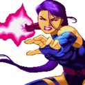

SELECT
- 
YOUR HEROES!
Ciclope (Scott Summers)
Ciclope (Cyclops) é Scott Summers, membro fundador do grupo X-Men e líder de campo da equipe. Nascido mutante, ele tem o poder de projetar pura energia de seus olhos, através de raios de energia concussiva controlados por seu visor feito de quartzo-rubi.